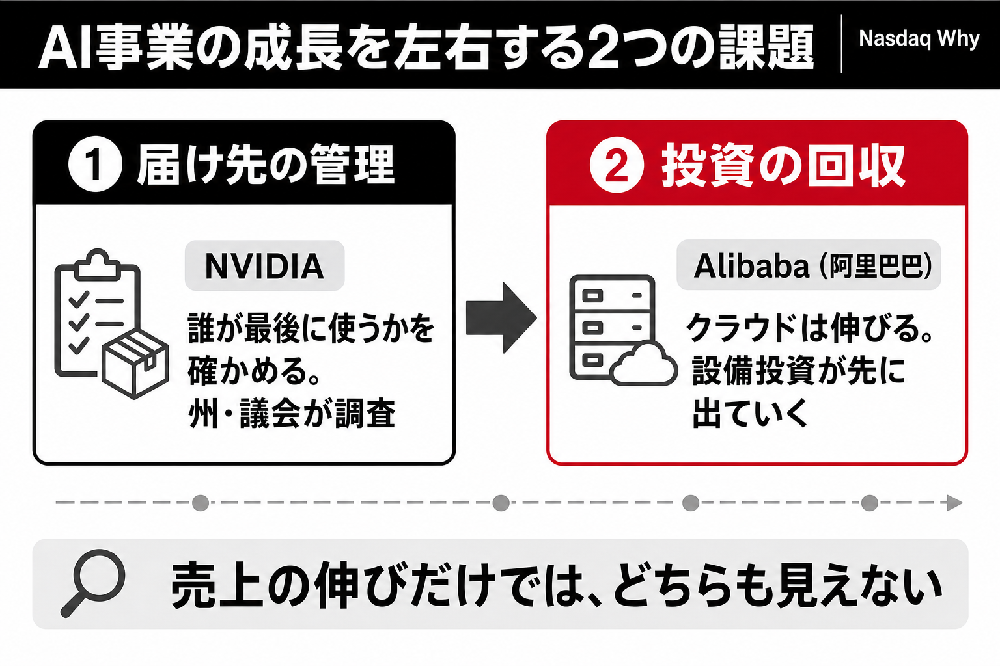
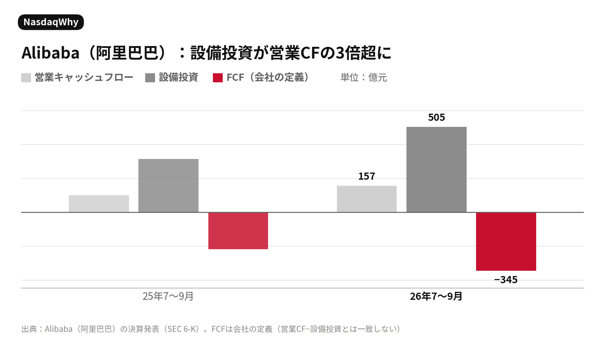

ニュースの深掘り
NVIDIAには州の調査、Alibaba（阿里巴巴）はクラウド53%増――AIの成長を左右する「届け先」と「回収」とは？
NVIDIAでは、先端チップや機密が中国に渡った可能性と、投資家への説明が調べられています。Alibaba（阿里巴巴）は、AIクラウドの売上と利益が大きく伸びる一方、設備投資で現金の流出が広がりました。米中の2社の開示から、AI事業の成長を左右する2つの課題、「誰に届けるか」と「投じたお金をいつ回収するか」を見ていきます。

NVIDIA：調べられているのはチップの行き先と説明
カリフォルニア州のボンタ司法長官は11月19日、NVIDIAに調査の召喚状（資料などの提出を求める命令）を送ったと発表しました。先端チップや機密情報が中国に渡った可能性と、そのリスクについて投資家や一般に誤解を招く説明をしていなかったかを調べます。違反があったかどうかは、まだ調査の段階です。
NVIDIAの取締役会は11月8日、独立した調査を始めると発表し、国の安全や会社の秘密が損なわれたと考える理由はないとしました。17日には、国の安全と輸出管理を監督する常設の委員会を作りました。
米下院の3つの委員会は、11月に辞任したジェンスン・フアン前CEOが12月1日に、法務責任者のティム・テター氏が12月2日に、非公開の聞き取りに応じると発表しています。
今後の注目：顧客の確認と、説明のタイミング
これからの開示で問われるのは、顧客や最後に使う人をどう確かめていたか、取締役会がいつ何を知ったか、そしてその時の投資家への説明と食い違いがないかです。
Alibaba（阿里巴巴）：クラウドの利益は2倍以上に
Alibaba（阿里巴巴）の2026年7〜9月期は、AIクラウド・計算サービスの売上が609.73億元で、前年同期より53%増えました。外部の顧客向けは64%増、そのうち計算用の機器の販売を除いた継続的な売上は67%増です。
部門の利益（調整後EBITA）は88.38億元で、121%増えました。使った分だけ払う料金や、契約の更新などの継続的な売上と、部門の利益がそろって伸びています。
でも会社全体では、現金の流出が広がった
会社全体の設備投資は504.77億元で60%増えました。営業キャッシュフロー（本業で入ってきた現金）も156.90億元と55%増えましたが、設備投資はその3倍以上です。会社が出すフリーキャッシュフロー（FCF）は344.72億元の流出で、前年同期の218.40億元から広がりました。
会社は、クラウドの設備への支出が増えたことが主な理由で、クラウドの顧客からの前払いの増加などが一部を埋めたと説明しています。

利益は86%増でも、予想には届かず
調整後の米国預託株式（ADS）1株あたり利益は8.10元で、前年同期より86%増えました。ただ、Bloombergがまとめた市場予想の10.75元には届きませんでした。売上は予想をわずかに上回っています。
呉泳銘（エディ・ウー）CEOは、米国の新しい計算力の規制が来年の製品やサービスに影響しうるとしたうえで、2030年に外部向けクラウドの売上1,000億ドルという目標は変わらないと述べました。
2つの課題と、次に見るもの
NVIDIAは「先端の計算力を誰に届けてよいか」、Alibaba（阿里巴巴）は「設備に投じたお金をいつ回収できるか」が問われています。どちらも、売上の伸びだけでは見えない課題です。
- NVIDIA：12月1・2日の聞き取り、州の調査の結果、取締役会の調査の報告
- Alibaba（阿里巴巴）：クラウドの継続的な売上と部門の利益の伸びが続くか
- Alibaba（阿里巴巴）：営業キャッシュフローと設備投資の差が縮まるか
- 両社に共通：11月19日に始まった米国の新しい規制（海外のデータセンターでの計算力の提供）の影響
NasdaqWhyでは、ニュースの「なぜ？」を一次資料の数字で深掘りしていきます。
出典
- カリフォルニア州司法長官：NVIDIAへの調査の召喚状（2026年11月19日）
- NVIDIA：Statement from NVIDIA Board of Directors
- ABC News：Nvidia forms national security committee（2026年11月17日）
- Alibaba：2026年9月期 四半期決算（SEC 6-K）
- Finviz：Alibaba AI Cloud Revenue Surges 53% as Quarterly Earnings Miss Analyst Forecasts（市場予想）
- ESM Magazine：Alibaba Tops Revenue Estimates（2030年の目標についてのCEOの発言）